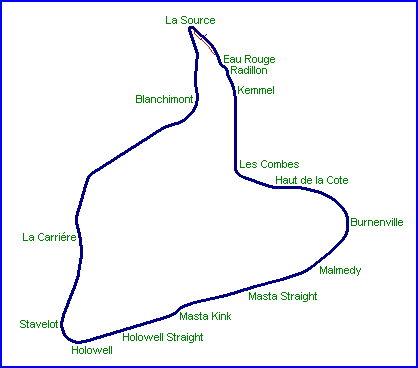
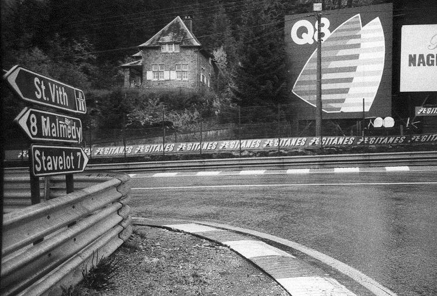
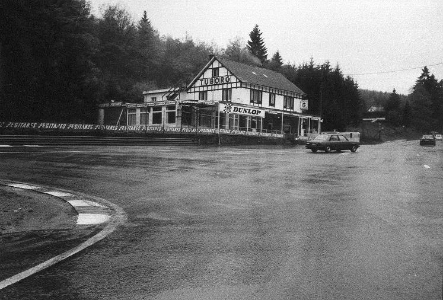
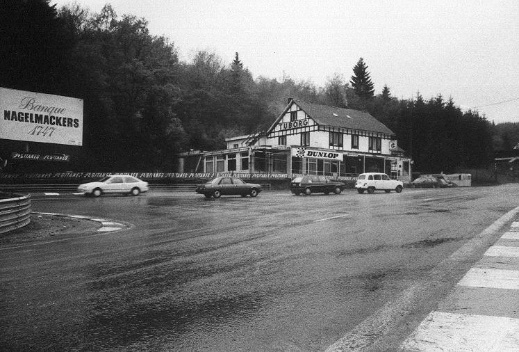
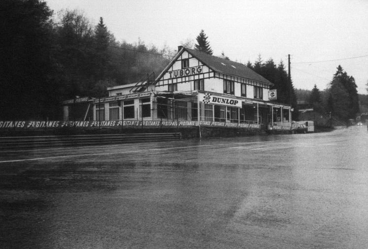
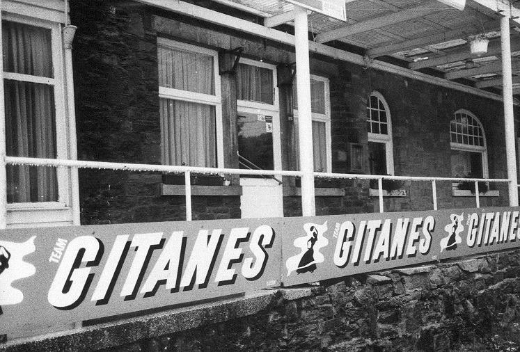

La Source & Auberge La Source
|| Contents | Eau Rouge | Les Combes | Haut de la Cote | Burnenville | Malmedy | Masta Straight |
| Masta Kink | Holowell Straight
| Stavelot | La Carriére | Blanchimont | La Source
|| HOME ||


Looking back into the La Source hairpin.

Looking back at the Auberge La Source from the La Source hairpin

Looking back at the Auberge La Source from the exit of the La Source hairpin

Auberge La Source

Terrace of the Auberge La Source
Photographs ©Carlos Ghys. Further information supplied by Luc Ghys. Reproduced here with kind permission.